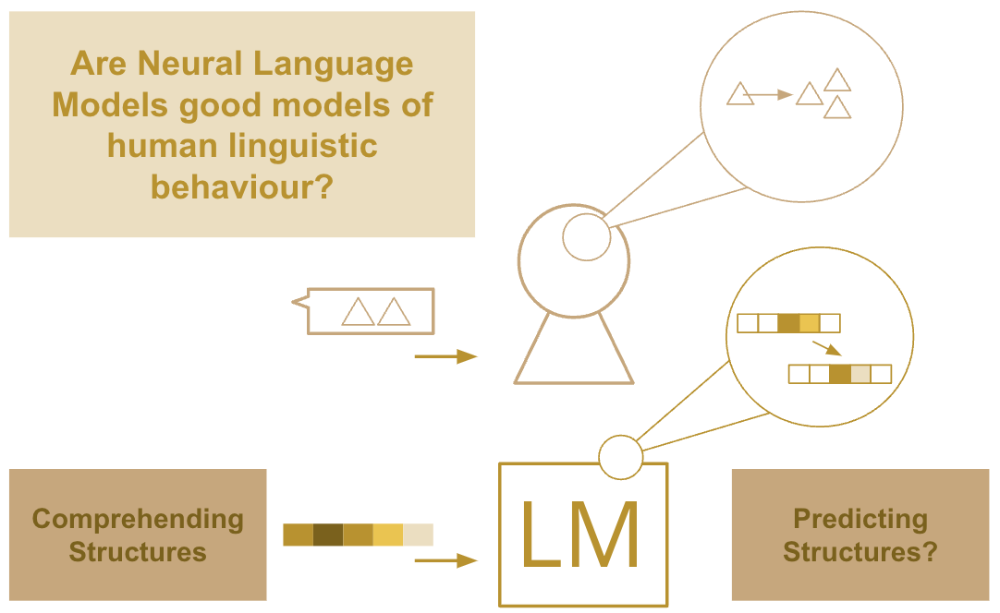

If you are interested in these topics, please get in touch! If you're a graduate student looking for PhD topics, while there are currently no funded positions, there are openings for keen PhD candidates who are applying for external funding, please get in touch if you'd like more information.
This is a collaborative project between the Computer Science and Psychology Departments in the University of Aberdeen. The key purpose of this study is to compare syntactic priming effects generated by human participants to that in AI systems that model language processing (e.g. Large Language Models - LLMs). We plan to understand the extent to which LLMs behave similarly to humans when comprehending structure in language, and whether resulting activation and prediction patterns are similar. Project collaborators: Dr Arabella Sinclair, Dr Agnieszka Konopka, Dr Anastasia Klimovich-Gray, Dr Nika Adamian. Funders: Aberdeen University, Internal Funding to Pump-Prime Research and Research Networks to all collaborators.
Investigating the effects of local context on repetition in model utterance production in Dialouge Repetition is a key component of dialogue. Humans use specific communication strategies involving repetition, critically, these are local and partner specific. We start from the desideratum that dialogue models should also produce humanlike levels of repetition: these are preferred by human users and lead to more successful communication in dialogue between humans. We aim to evaluate a) whether language models produce similar levels of dialogue repetition as occur in naturalistic human interaction, and b) when comprehending we want to know what are the processing mechanisms that led to this correct, or incorrect use of repetition.
Learning through communicating, corrective feedback, and interactive learning Caregivers provide feedback to children in dialogue via repetition, elaboration, corrective feedback, and modelling adult conversation. While previous research has primarily focused on the use and usefulness of corrective feedback to syntactic constructions (Marcus, 1993; Fernandez 2016), there is a notable gap in our knowledge about the role of situation-specific modelling of adult-like behaviour for pragmatic development. Learning to ask questions serves particularly well for assessing this form of feedback because they have been shown to be tailored to children’s mental states in the shape of test-questions (Schatz, 1974) and because they show a predictable turn-taking behaviour (Casillas & Frank, 2017), a large lexical overlap between speaker-turns (Paul 1880), and dedicated response markers (Kramer & Rawlins, 2009). All these ingredients aid in identifying questions as a phenomenon. One challenge with assessing different kinds of feedback to language learners is that work is often based on individual case studies due to the resource intensity of analysing child language data. With the arrival of Large Language Models (LLMs), this challenge can be overcome by taking advantage of the powerful representations within, and classification ability of LLMs to better recognise and analyse different types of feedback. This, in turn, will shed light on how children exploit caregiver feedback to advance their conversational skills. In turn, analysing properties of repetition and feedback in human language can have implications for incorporating successful interaction strategies in language models used in dialogue agents.
Storytelling is an area where humans excel, using creativity and communication skills to pass on histories, introspect, entertain, and connect with others. This project will investigate whether and to what extent Neural Language Models can be useful collaborative tools for writers creating short stories. As part of this investigation, we are interested in exploiting the ability of NLMs to be fine-tuned to specific examples of language, and creating several potential characters with which our human authors can interact.
Can LLMs produce more human-like language that is adaptive, context-specific, and audience-aware? Current dialogic interaction systems fall short when it comes to nuanced, pragmatic language understanding. Taking inspiration from the fields of psycholinguistics and cognitive science, this project aims to explore, evaluate and extend the potential of LLMs to generate language that is appropriate for an interactive setting such as dialogue. Adaptive NLG can lead to more inclusive, personalised, and appealing language; essential components of a number of downstream applications, such as in educational settings, or as creative tools. Evaluating such adaptive language will involve analysis of language produced by humans, compared to humans and models in collaborative communicative settings.